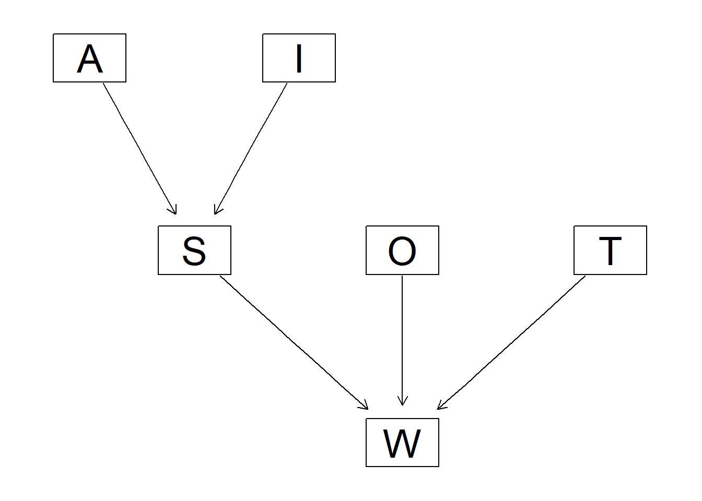
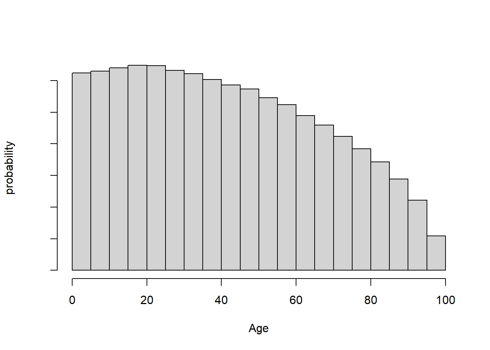
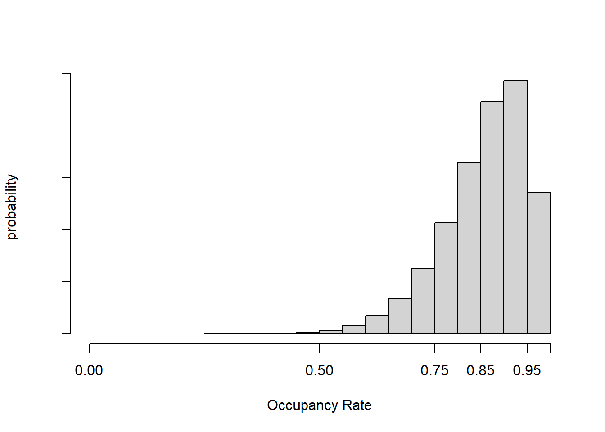
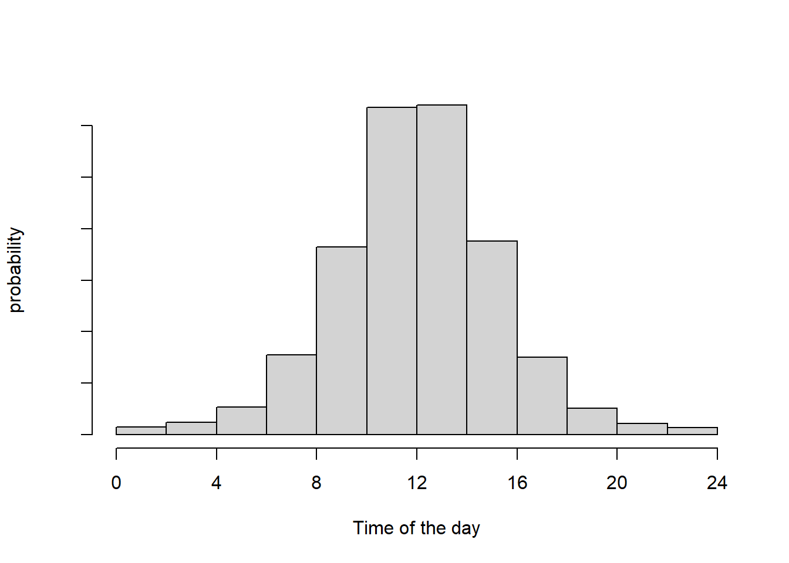

6 より複雑な事例：汎用ベイジアンネットワーク
変量効果を伴ったさらに一般的なケース
6.1 事例紹介：救命救急科の待ち時間
| 項目 | 型 | 略語 | 説明 |
|---|---|---|---|
| 年齢 | 連続 | A | |
| インシデントのタイプ | 離散 | I | 家庭内、交通事故、業務上、その他 |
| トラウマスコア | 連続 | S | その患者が治療を必要とする緊急性の程度（0-12） |
| 病床利用率 | 連続 | O | |
| 到着時間帯 | 連続 | T | |
| トリアージに係る待ち時間 | 連続 | W |
6.2 グラフィカル及び確率的表現

より現実的な方法で専門知識を利用して自由なモデリングを実施する
6.2.2 A: β分布
NHSデータでは0-100歳を5歳単位で分割しているが、パラメータが20必要になるためベータ分布を用いることとする
\[ A \sim\lceil Beta(1.1,1.5) \cdot 100 \rfloor \]
これにより運ばれる人の年齢分布の主要な特徴を示す。
人口の分布と、年齢別の運ばれる確率を掛け合わせると以下のようなグラフが得られる、らしい。
これは統計的な情報から算出し、それっぽいグラフを作っているということ
hist(round(100 * rbeta(10^6, shape1 = 1.1, shape2 = 1.5)),
xlab = "Age", ylab = "probability", main = "", freq = FALSE,
xlim = c(0, 100), axes = FALSE)
axis(2, label = FALSE)
axis(1)
6.2.3 S:トラウマスコア：各ポイントの二項確率をロジスティック回帰で決定
トラウマスコアは0-12の整数だが実際には0-2が使われることはほとんどない
\[ log(\frac{p}{1-p}) = \beta_0+\beta_1A+\beta_2 \mathbb{I}(I=road)+\beta_3 \mathbb{I}(I=work)+\beta_4 \mathbb{I}(I=other) \]
ベースライン(\(\beta_0\)：最も起こりやすい出来事である家庭内インシデント）を基準
- 7を設定
ベースラインが加齢（\(\beta_1A\)）とともに
- 1ポイント(20歳増えるごとに加算）につき\(\beta_1=-0.05\)
かつ各種インシデントの平均的な患者の重度によって調節されるような形式
- \(\beta_2=-4,\beta_3=-3,\beta_4=-1\)
6.2.4 O:病床利用率：ベータ分布
統計より、平均は0.90, 密度は0.80から0.99に集中する
\[ O\sim Beta(12,2) \]
hist(rbeta(10^6, shape1 = 12, shape2 = 2),
xlab = "Occupancy Rate", ylab = "probability", main = "", freq = FALSE,
xlim = c(0, 1), axes = FALSE)
axis(2, label = FALSE)
axis(1, at = c(0, 0.5, 0.75, 0.85, 0.95, 1))
6.2.5 T:到着時間帯：周期関数
ある日から翌日になるような連続性を保証するために時間の周期性を定義する確率密度関数を用いる
フォン・ミーゼス分布
[-π,π]にかけて定義
\(\mu\)（どの時間帯にピークを迎えるか）、\(\kappa\)（ピークに係る尖度）のパラメータをもつ
\[ B\sim\frac{vonMises(0.001,2)-\pi}{2\pi}\cdot24 \]
- 運ばれてくる可能性が高い時間帯をAM10-12とし、夜間は少なく見込む
library(circular)
hist(as.numeric(rvonmises(10000, 0.0001 - pi, 2) / (2 * pi) * 24),
xlab = "Time of the day", ylab = "probability", main = "", freq = FALSE,
xlim = c(0, 24), axes = FALSE)
axis(2, label = FALSE)
axis(1, at = c(0, 4, 8, 12, 16, 20, 24))
6.3 Stanを使ってモデル構築
Stanはなんらかの情報が与えられた場合の分布からランダムサンプリングを実行する能力に長けている→samplerそのもの
6.3.1 データの生成
入力・モデル・出力を宣言するためのブロックで構成される
#パラメータは初期化はされるが宣言されない
stancode <- '
data {
vector[2] Ap; // shape parameters for the beta distribution.
vector[4] Ip; // probabilities for incident types.
vector[6] Sp; // regression coefficients, logistic regression.
vector[2] Op; // parameters for the beta distribution.
vector[2] Tp; // parameters for the von Mises distribution.
vector[5] Wp; // regression coefficients, log-linear regression.
}
generated quantities {
real A;
int I;
real S;
real O;
real W;
real T;
A = ceil(beta_rng(Ap[1], Ap[2]) * 100);
I = categorical_rng(Ip);
S = 2 + binomial_rng(10, inv_logit(Sp[1] + A * Sp[2] + Sp[2 + I]));
O = beta_rng(Op[1], Op[2]);
T = (von_mises_rng(Tp[1], Tp[2]) + pi()) / (2 * pi()) * 24;
W = lognormal_rng(Wp[1] + O * Wp[2] + (12 - S) * Wp[3] +
fmax(6 - fabs(T - 12), 0) * Wp[4], Wp[5]);
}
'#サンプリング関数にわたしてランダムサンプリングを実行
params <- list(
Ap = c(1.1, 1.5),
Ip = c(0.075, 0.50, 0.25, 0.175),
Sp = c(7, -0.05, 0, -4, -3, -1),
Op = c(12, 2),
Tp = c(0.001, 2),
Wp = c(log(20), 2 * log(2), -0.5 * log(2), 0.25 * log(2), 1)
)
#パラメータそのものを固定させている
#thinでサンプル同士ができる限り独立するように25サンプルごとに1サンプル使用する間引きを実施
fit <- sampling(data.model, algorithm = "Fixed_param",
data = params, thin = 25, iter = 50000, seed = 42)##
## SAMPLING FOR MODEL 'anon_model' NOW (CHAIN 1).
## Chain 1: Iteration: 1 / 50000 [ 0%] (Sampling)
## Chain 1: Iteration: 5000 / 50000 [ 10%] (Sampling)
## Chain 1: Iteration: 10000 / 50000 [ 20%] (Sampling)
## Chain 1: Iteration: 15000 / 50000 [ 30%] (Sampling)
## Chain 1: Iteration: 20000 / 50000 [ 40%] (Sampling)
## Chain 1: Iteration: 25000 / 50000 [ 50%] (Sampling)
## Chain 1: Iteration: 30000 / 50000 [ 60%] (Sampling)
## Chain 1: Iteration: 35000 / 50000 [ 70%] (Sampling)
## Chain 1: Iteration: 40000 / 50000 [ 80%] (Sampling)
## Chain 1: Iteration: 45000 / 50000 [ 90%] (Sampling)
## Chain 1: Iteration: 50000 / 50000 [100%] (Sampling)
## Chain 1:
## Chain 1: Elapsed Time: 0 seconds (Warm-up)
## Chain 1: 0.007 seconds (Sampling)
## Chain 1: 0.007 seconds (Total)
## Chain 1:
##
## SAMPLING FOR MODEL 'anon_model' NOW (CHAIN 2).
## Chain 2: Iteration: 1 / 50000 [ 0%] (Sampling)
## Chain 2: Iteration: 5000 / 50000 [ 10%] (Sampling)
## Chain 2: Iteration: 10000 / 50000 [ 20%] (Sampling)
## Chain 2: Iteration: 15000 / 50000 [ 30%] (Sampling)
## Chain 2: Iteration: 20000 / 50000 [ 40%] (Sampling)
## Chain 2: Iteration: 25000 / 50000 [ 50%] (Sampling)
## Chain 2: Iteration: 30000 / 50000 [ 60%] (Sampling)
## Chain 2: Iteration: 35000 / 50000 [ 70%] (Sampling)
## Chain 2: Iteration: 40000 / 50000 [ 80%] (Sampling)
## Chain 2: Iteration: 45000 / 50000 [ 90%] (Sampling)
## Chain 2: Iteration: 50000 / 50000 [100%] (Sampling)
## Chain 2:
## Chain 2: Elapsed Time: 0 seconds (Warm-up)
## Chain 2: 0.005 seconds (Sampling)
## Chain 2: 0.005 seconds (Total)
## Chain 2:
##
## SAMPLING FOR MODEL 'anon_model' NOW (CHAIN 3).
## Chain 3: Iteration: 1 / 50000 [ 0%] (Sampling)
## Chain 3: Iteration: 5000 / 50000 [ 10%] (Sampling)
## Chain 3: Iteration: 10000 / 50000 [ 20%] (Sampling)
## Chain 3: Iteration: 15000 / 50000 [ 30%] (Sampling)
## Chain 3: Iteration: 20000 / 50000 [ 40%] (Sampling)
## Chain 3: Iteration: 25000 / 50000 [ 50%] (Sampling)
## Chain 3: Iteration: 30000 / 50000 [ 60%] (Sampling)
## Chain 3: Iteration: 35000 / 50000 [ 70%] (Sampling)
## Chain 3: Iteration: 40000 / 50000 [ 80%] (Sampling)
## Chain 3: Iteration: 45000 / 50000 [ 90%] (Sampling)
## Chain 3: Iteration: 50000 / 50000 [100%] (Sampling)
## Chain 3:
## Chain 3: Elapsed Time: 0 seconds (Warm-up)
## Chain 3: 0.006 seconds (Sampling)
## Chain 3: 0.006 seconds (Total)
## Chain 3:
##
## SAMPLING FOR MODEL 'anon_model' NOW (CHAIN 4).
## Chain 4: Iteration: 1 / 50000 [ 0%] (Sampling)
## Chain 4: Iteration: 5000 / 50000 [ 10%] (Sampling)
## Chain 4: Iteration: 10000 / 50000 [ 20%] (Sampling)
## Chain 4: Iteration: 15000 / 50000 [ 30%] (Sampling)
## Chain 4: Iteration: 20000 / 50000 [ 40%] (Sampling)
## Chain 4: Iteration: 25000 / 50000 [ 50%] (Sampling)
## Chain 4: Iteration: 30000 / 50000 [ 60%] (Sampling)
## Chain 4: Iteration: 35000 / 50000 [ 70%] (Sampling)
## Chain 4: Iteration: 40000 / 50000 [ 80%] (Sampling)
## Chain 4: Iteration: 45000 / 50000 [ 90%] (Sampling)
## Chain 4: Iteration: 50000 / 50000 [100%] (Sampling)
## Chain 4:
## Chain 4: Elapsed Time: 0 seconds (Warm-up)
## Chain 4: 0.005 seconds (Sampling)
## Chain 4: 0.005 seconds (Total)
## Chain 4:#インシデントのカテゴリをラベル付けした因子型に変換する
aewait$I <- factor(aewait$I,
labels = c("domestic", "road", "work", "other"))
head(aewait)## A I S O T W
## 1 82 road 3 0.6811510 1.874496 1.556683
## 2 78 road 5 0.9249541 12.375129 11.410514
## 3 84 other 11 0.8622833 12.511769 33.332342
## 4 42 work 11 0.7455068 14.367820 68.197830
## 5 63 road 7 0.8143039 13.070951 10.136785
## 6 28 work 12 0.9137683 11.489579 41.745250